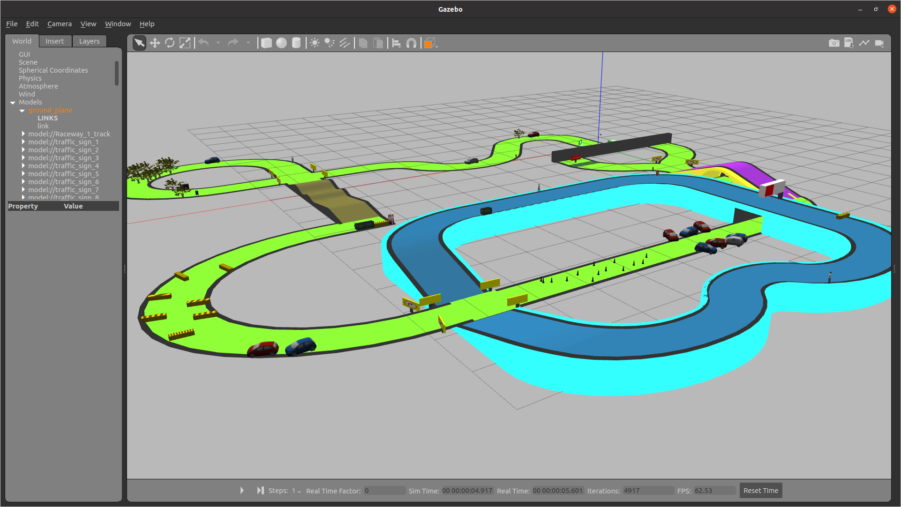

Pursuing MS in Robotic Systems Development at Carnegie Mellon University
About Me
I'm Akshit Raizada, a Master's student in Robotic Systems Development at Carnegie Mellon University. I completed my B.Tech in Mechanical Engineering at IIT Indore, where I developed a strong foundation in robotics, automation and AI.
My work spans robot learning, manipulation, SLAM and perception. This summer I was a Robotics Engineer Intern at Noble Machines, building VLA benchmarking and data pipelines for a humanoid robot. My MRSD capstone is ORIO, a dual-arm robot that organizes operating-room inventory with UPMC. I enjoy bridging research with real-world deployment, from perception stacks and state estimation to learned policies running on hardware.
I'm always excited to connect with people whether it's for collaboration, research or just sharing ideas.
Built a VR-teleop-to-MimicGen pipeline that multiplies a handful of demonstrations into hundreds of training trajectories, then post-trained VLA and world-model checkpoints on a custom humanoid and deployed the policies on physical hardware.
Engineered a plug-and-play VLA benchmarking harness whose modular plugin interface makes new models and evaluation environments swappable without touching the core pipeline.
Owned the full real-to-sim development process, validating that in-simulation success rates tracked real-world outcomes.
Designed a self-supervised, real-time off-road perception model fusing thermal, RGB and velocity data into traversability costmaps that stay reliable from day into night, learned with no manual labels.
Curated and open-sourced the first off-road dataset to pair calibrated thermal and RGB imagery with a full multi-LiDAR, IMU and GNSS suite, released in KITTI and NuScenes formats.
Benchmarked continual test-time-adaptation methods on synthetic fog, rain and snow, cutting worst-case costmap error by ~33% over the source model.
Integrated BEVFusion, a multi-sensor (LiDAR-camera-radar) 3D object-detection network, into ROS for real-time detection from live sensor streams on a ground robot.
Packaged the ROS-integrated stack as a Dockerized, one-command-deployable codebase and shipped it to an external customer, running on their robot’s compute-constrained hardware.
Building a dual-arm Franka robot with custom suction grippers that autonomously picks and labels operating-room inventory and keeps the hospital’s inventory database current.
Built the perception-to-grasp pipeline: open-vocabulary detection and segmentation (Grounding DINO + SAM), PRM motion planning validated in a MuJoCo twin, and learning-based DexNet grasping for clutter.
Built the SQL-backed RFID tracking subsystem on a custom low-level Impinj driver, with expiry alerts for staff.
Humanoid Soccer: Unitree G1s Learning 3v3 with Deep RL
Deep RL project · Sep 2026 – present
Built a hierarchical deep-RL system where simulated Unitree G1 humanoids play 3v3 soccer, running in batched GPU MuJoCo at ~26k environment steps per second.
Trained five low-level skills (run, get-up, dribble, strike, receive) with SAC and PPO on recorded hand-over states, so the robots switch reliably between them.
Trained a high-level PPO team policy that picks a skill and target for each robot at 5 Hz, using self-play against a pool of past selves and scripted opponents.
86% wins vs. scripted coach
96% wins vs. ball-chaser
99.7% ball control while dribbling
96.5% standing within 4 s of a fall
MAC-VIO: Learned Stereo VO + IMU Factor Graph
16-833 Robot Localization & Mapping · Mar – Apr 2026
Built a visual-inertial SLAM stack pairing a learned stereo VO frontend (MAC-VO) with a GTSAM factor-graph backend (IMU preintegration, iSAM2 smoothing), benchmarked on 10 EuRoC and TUM-VI sequences.
Built trajectory alignment/comparison and interactive visualization tooling to diagnose drift and degenerate-motion failure modes.
Traced and fixed a one-second camera/IMU timestamp misalignment in the data loaders, and wrote TUM-VI support from scratch.
~30% lower online ATE vs. vision-only
better on 9 / 10 EuRoC and TUM-VI sequences
Combined Task & Motion Planning
16-782 Planning · Nov – Dec 2025
Designed a geometry-aware STRIPS planner that embeds robot motion costs (via analytical inverse kinematics) directly into A* action evaluation, solving tangram rearrangement end-to-end in ROS/Gazebo.
Designed and fabricated a hybrid vertical-axis wind turbine combining Darrieus and Savonius rotor features, with automatic blade alignment to maximize torque and energy generation.
Analysed and optimized the design with CFD in Ansys Fluent.

Autonomous Race Car
NXP AI in Mobility · Rank 2 of 950+ teams · Best Coding Award
Deployed high-speed real-time planning and control algorithms in ROS 2/Gazebo for an autonomous race car.
Handled dynamic traffic, elevation changes, realistic obstacles and traffic-sign compliance.
Pursuing M.S. in Robotic Systems Development | GPA: 4.0/4.0 Coursework: Robot Localization & Mapping (A+), Robot Autonomy, Manipulation Estimation & Control (A+), Robot Mobility (A+), Planning for Robotics, Systems Engineering. Ongoing: Deep Reinforcement Learning, Generative AI, MRSD Project II
Indian Institute of Technology Indore (IIT Indore)
Nov 2021 - July 2025 | Indore, India
B.Tech in Mechanical Engineering | GPA: 8.31/10 Coursework: Computer Vision, Spacecraft Attitude Dynamics, Control & Pointing, Kinematics & Dynamics of Machines, Finite Element Methods.